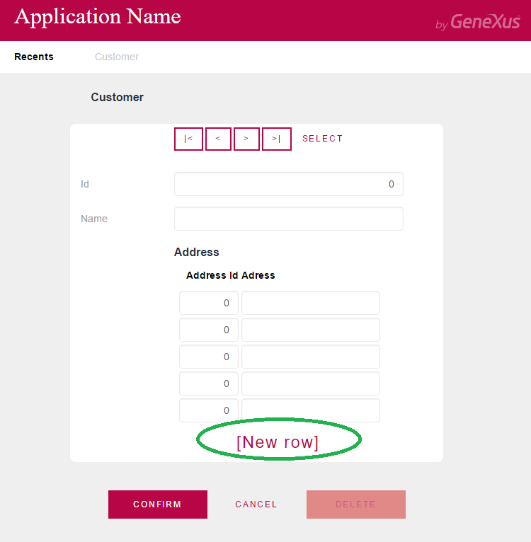
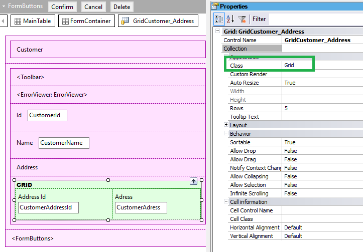
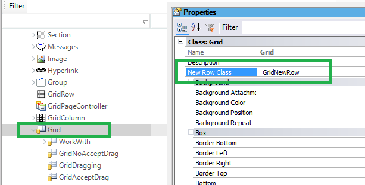
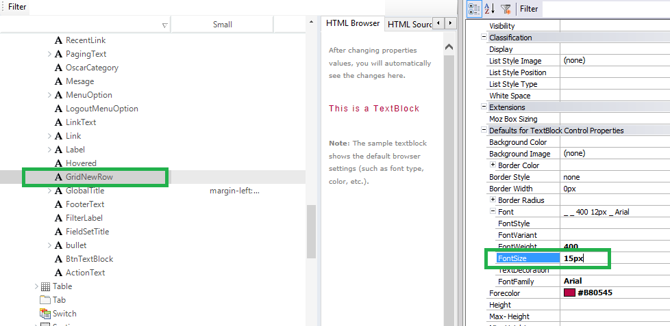
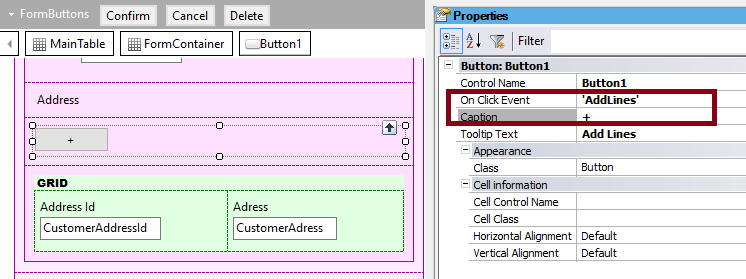
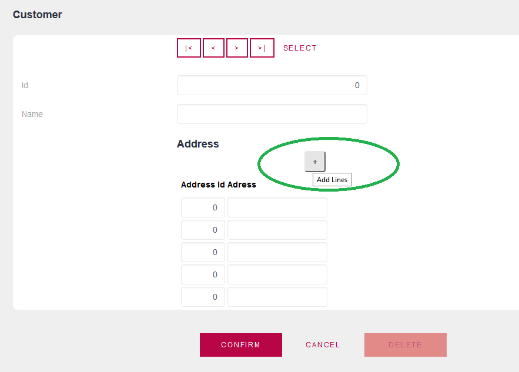

The New Row style in grids is configured by using the New Row Class property available in the Theme. New Row Class is a class property in the Theme available for Grids and Free Style Grids, whose purpose is to configure the class that will determine the settings of the grids "new row" link. See the image below where the "new row" link is highlighted: 
How to use the New Row Class propertyFirst, check the class associated with the grid (in the example it is the Grid class), and edit the New Row Class property for the Grid class in the Theme.   By default, the value of New Row Class is GridNewRow, which is a descendant of the Texblock class. There you can change the settings of the GridNewRow class as desired; for example, changing the Font Size would be as follows:  NoteIf you want to change the text or position of the "new row" functionality, you need to use a control to execute that action:
See Grids in Web Transactions for more information about this topic. ExampleHere we've added a button to the form, whose On Click Event is "AddLines".  The control name of the transaction's grid is GridCustomer_Address so the AddLines event is as follows:
Event 'AddLines'
GridCustomer_Address.AddLines(1)
Endevent
At runtime: 
|